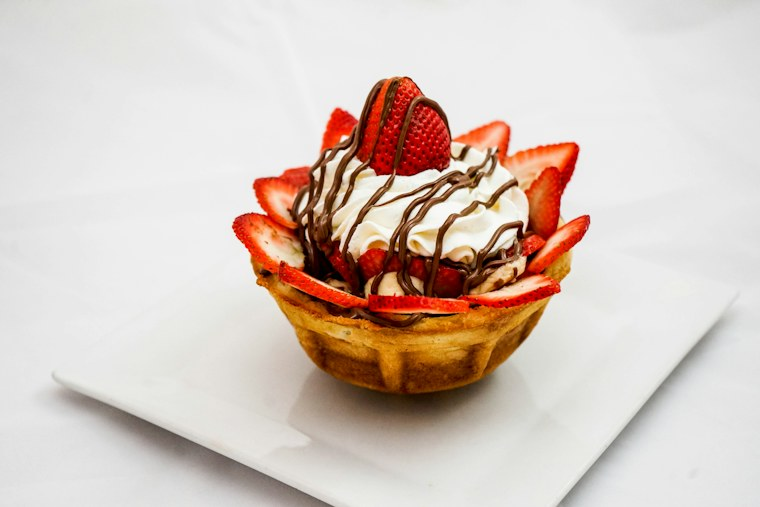

Consejos dulces · Caso curioso #2
Cómo conservar un pastel
Pequeños cuidados para mantener su textura, sabor y frescura por más tiempo.

Para disfrutar tu pastel como recién preparado, conviene protegerlo del aire y de los cambios de temperatura. Si no lo servirás de inmediato, guárdalo cubierto en el refrigerador.
Antes de servir
Saca las porciones del refrigerador unos minutos antes de servirlas para que recuperen su textura y aroma. Evita dejar el pastel expuesto al sol o cerca de fuentes de calor, especialmente si tiene crema o fruta fresca.
Si quedan porciones, guárdalas en un recipiente hermético. Así conservarán mejor su humedad y no absorberán aromas de otros alimentos.
Encuentra tu próximo pastel